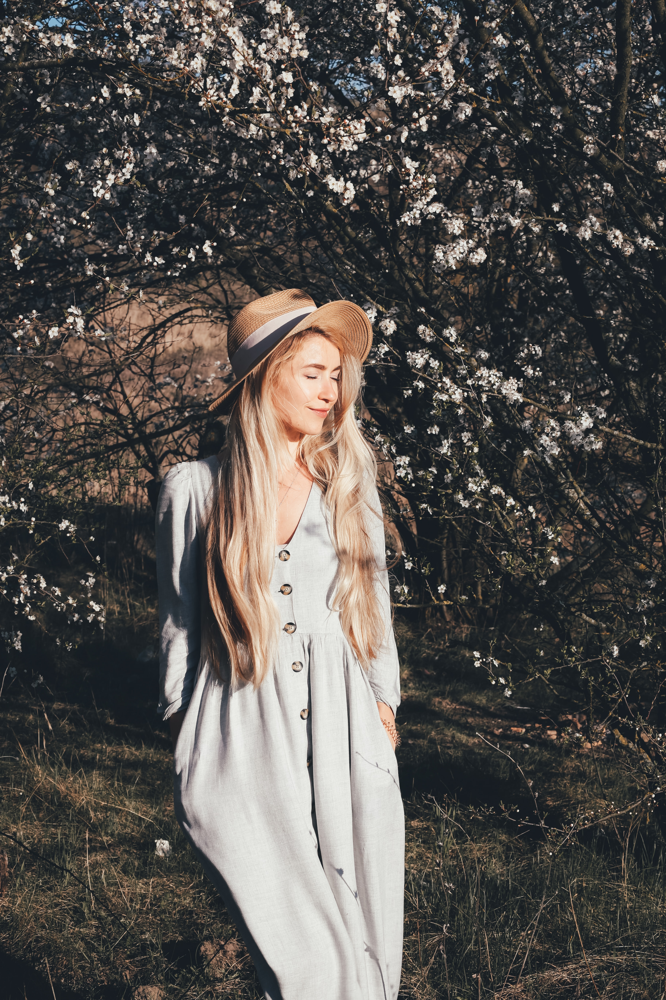
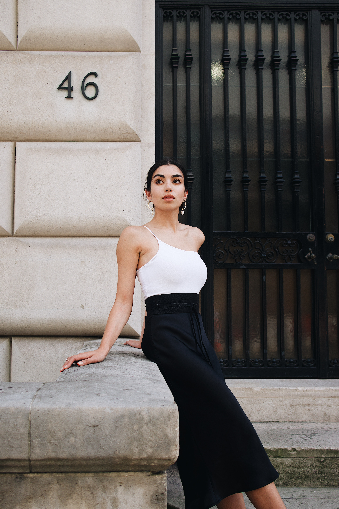
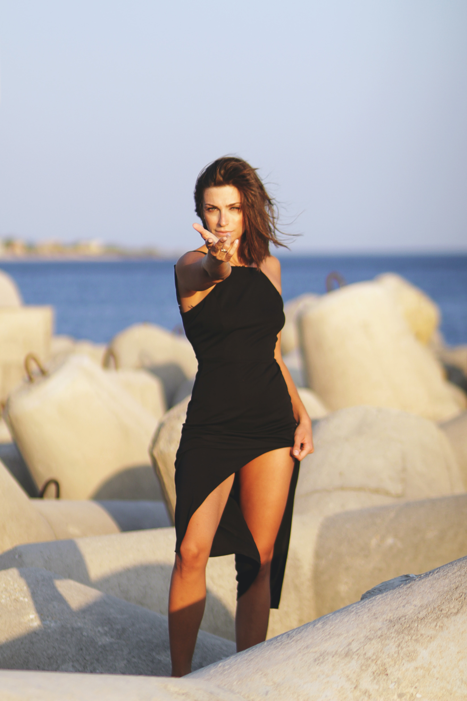
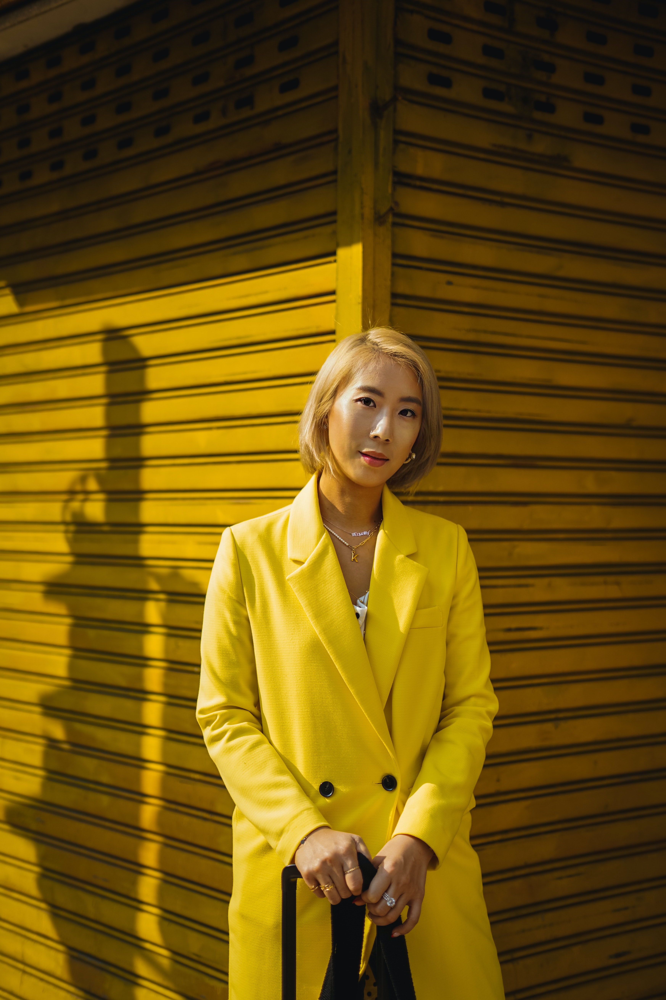
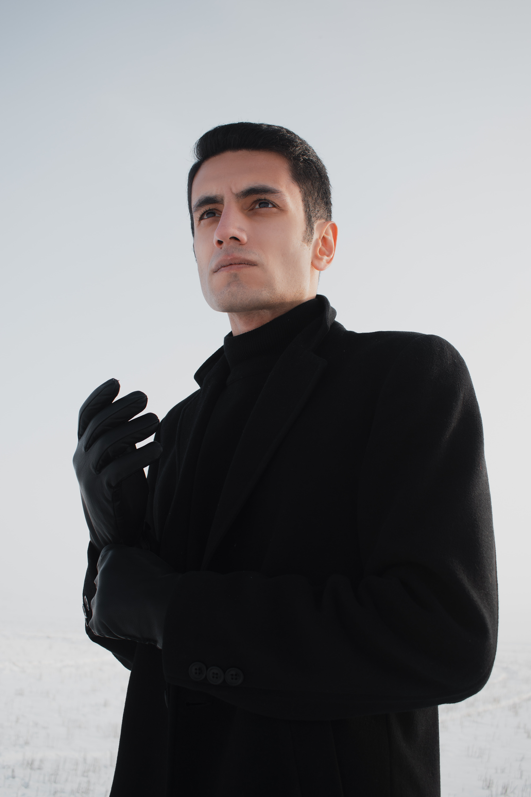

Introdução
Cada pessoa é única em seu estilo, mas influenciamos e somos
influenciados pelo ambiente em que vivemos. Logo, até nosso jeito de
se vestir provavelmente tem alguma origem ou conceito.
Quer conferir?
-
Romântico
Neste estilo, vemos a predominância de roupas com tecidos delicados e de tons pasteis, juntamente de estampas florais. Transmitem sutileza e alegria, mas o exagero pode levar a uma imagem que beira à infantilidade.
 -
Clássico
O estilo clássico é aquele que é dito como tradicional, utilizado geralmente para ocasiões mais sérias, transmitindo certo ar de maturidade. Cores neutras com estampas extremamente discretas ou até mesmo a ausência delas.
-
Sofisticado
O estilo sofisticado diz respeito a uma habilidade quase natural de se parecer elegante. Peças de grife combinadas com cores variadas e uma postura exemplar e altiva dizem respeito a este estilo.
 -
Casual/Esportivo
Estilo que preza por praticidade. Consiste em tecidos confortáveis e que não marcam o corpo, com cores básicas e estampas atuais. É um estilo que, quando mal aplicado, pode gerar uma sensação de desleixo.
-
Sexy
É focado em roupas mais curtas, marcando o corpo do usuário. Regatas que realçam os músculos, maquiagens pesadas, decotes que transmitem sensualidade e autoconfiança. Este também tem um risco: deve-se tomar cuidado com a vulgaridade excessiva nesse estilo.
 -
Criativo
Cores vivas e marcantes combinadas com exagero passam energia e excentricidade. A extravagância é a chave, mas também pode gerar uma visão ruim e totalmente desprendida da realidade.
 -
Moderno
Preto unido a cores pastéis, tecidos mais pesados em peças de formato extremamente fora do comum. A diferença é o foco central, mesmo com a discrição necessária aqui.
